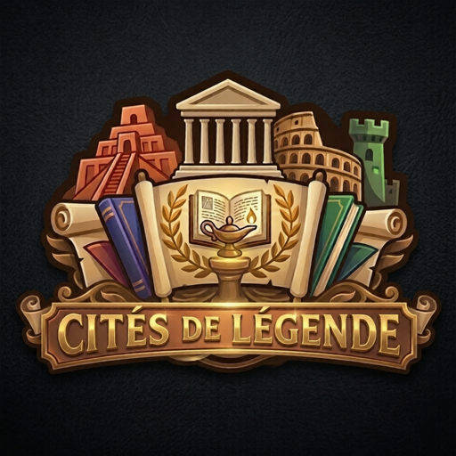

La Rochelle
France, 1627–1628
A Protestant port city holds out against the French crown for fourteen months of siege.

Documentaries about the great cities of history that fell, vanished, or were forgotten, told in French and in English.
Each film follows one city from its rise to the moment everything turned: a siege, an earthquake, a conquest, a slow abandonment. Short episodes from the same stories go out on TikTok, Instagram and Facebook.
13 cities so far, 24 full-length films. Newest first.
France, 1627–1628
A Protestant port city holds out against the French crown for fourteen months of siege.
Portugal, 1755
An earthquake, a tsunami and a fire erase the capital of a global empire in a single morning.
Siam, 1351–1767
One of the largest cities in Asia, wiped off the map by an invading army.
North Africa, 814–146 BC
Rome's great rival in the Mediterranean, besieged and razed to the ground.
Abbasid Caliphate, 762–1258
The Round City, larger than Rome at its height, until the Mongol sack.
Italy, 15th–16th century
Europe's richest republic and the long fall of its freedom.
Mexico, 1521
A city of 200,000 people built in the middle of a lake, and what became of it.
New Amsterdam, 1664
Four English warships take the Dutch colony without firing a shot.
Mali, 14th–16th century
Five centuries of European legend about a city of gold, and the real city of scholars.
Assyria, 7th century BC
The largest city in the world, vanished so completely that its site was forgotten.
Nabataean kingdom
The rose-red city carved into the rock, hidden for centuries.
Khmer Empire, 9th–15th century
The largest pre-industrial city on Earth, swallowed by the forest.
Timurid Empire, 14th century
The ruthless conqueror who built a paradise on the Silk Road.
Every film goes through the same five stages, from a blank page to publication.
A brief sets the city, the period and the angle. The narration is written chapter by chapter, then reviewed and corrected by hand before anything else happens.
The French script is recorded first. The English version is translated to the same length, chapter by chapter, so that both languages share the same footage.
Each sentence of narration becomes a shot. Every shot is described, generated, checked against the period, and rejected and redone when it is not right.
Shots are cut to the narration's real timing and assembled into the final edit, with chapter titles and transitions.
The full film goes to YouTube. Shorter episodes drawn from the same story go to YouTube Shorts, TikTok, Instagram and Facebook.
Bobine is the software the channel is made with. It follows each film through the five stages above and publishes the finished videos to the channel's own accounts. It runs on the creator's own computer, has a single user, and is not offered to anyone else.
Bobine connects to the channel's TikTok account through TikTok Login Kit, and publishes short episodes with the Content Posting API (Direct Post). For each short, the creator chooses the video in Bobine, checks the caption, and sends it. Bobine then shows whether TikTok accepted and published it.
Bobine never reads other accounts, viewers, comments or followers. The access token stays on the creator's computer. The full details are in the Privacy Policy and the Terms of Service.
For questions about the channel, the films, or this website, write to mobiup.studio@gmail.com.